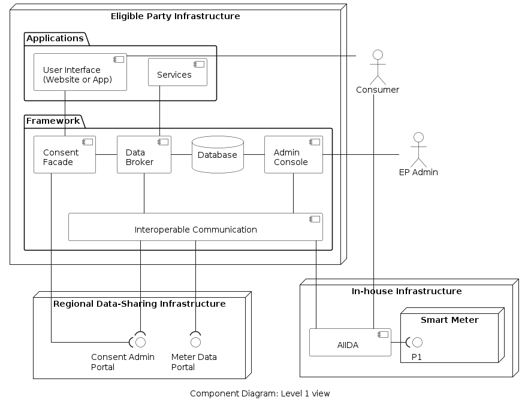
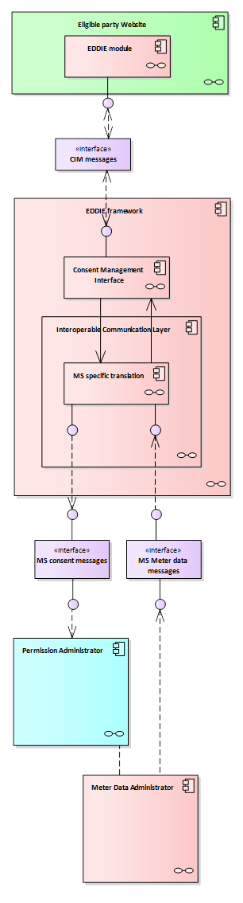
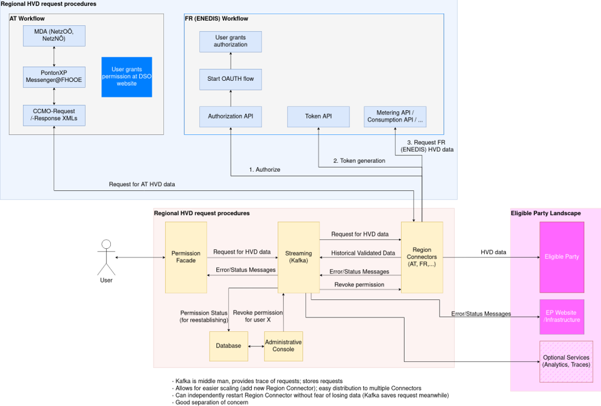

Building Block View
Building Block View
The building block view is presented through a description of the system using levels. Level 1 shows the overall system along with all the contained building blocks. Level 2 focuses on some building blocks from level 1. Level 3 focuses on building blocks from Level 3 and so on. After the levels, there are additional sections showing the block view for specific features.
Level 1
A high-level view of the system is shown below. To derive this view we have used functional decomposition on the main functionality of the framework (as discussed in Section 3: Context and Scope).

Contained Building Blocks
The eligible party manages the following components:
| Component | Responsibility |
|---|---|
| User Interface | Entry point for consumers to provide their consent. |
| Consent Facade | Manages and stores the consent of the consumers. |
| Data Broker | Handles the communication among internal components |
| Database | Stores information about consents, state, and data. |
| Admin Console | Entry point for the eligible party to register with regional data-sharing infrastructure. |
| Interoperable Communication | translates messages/data from data-sharing infrastructures of different regions to a unified format. |
The house of the consumer hosts the following.
The eligible party manages the following components:
| Component | Responsibility |
|---|---|
| AIIDA | Gets real-time data from the smart meter. |
Black Boxes
| Component | Responsibility | Interface |
|---|---|---|
| Consent Admin Portal | Issues consent to the eligible party upon request from a consumer | HTTP |
| Meter Data Portal | Gives access to historical data upon request from the eligible party (with appropriate consent) | HTTP |
| Smart meter | A device installed at home by the grid operator | P1 |
Level 2
Intro and motivation
- figure
Contained Building Blocks
Interfaces
Black Boxes
Consent Facade
TBD
The figure below shows the components of the system that are relevant to the consent facade.

add figure description here
A different view of the system which includes two countries is shown below.

add figure description here
AT - Austria <_building block x.1_>
Specifies the internal structure of building block x.1.
<white box template>
DE - Germany <_building block x.2_>
<white box template>
FR - France <_building block x.2_>
<white box template>
IT - Italy <_building block y.1_>
<white box template>